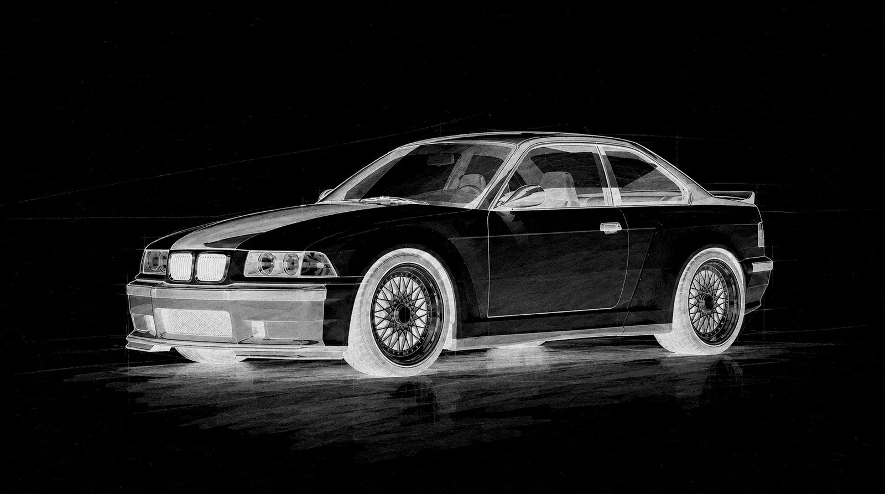
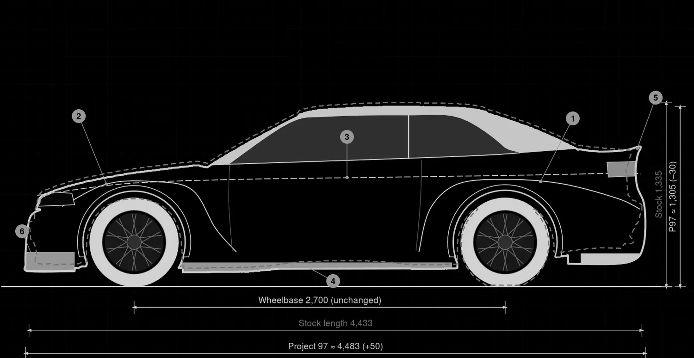
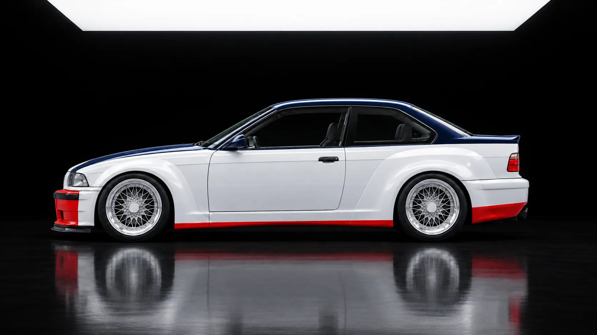
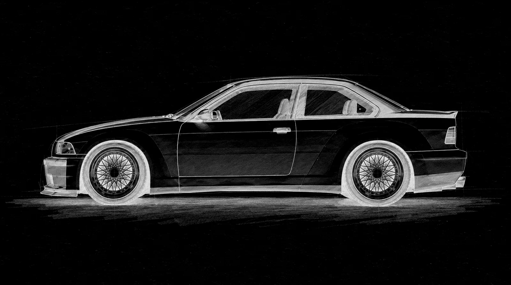

The plan
Revival Revolutions is a design studio, and so far it has produced designs. This page covers what has been done and how we plan to get from drawings to one finished car.



Concept work Project 97 as a drawing, a blueprint and a render. This is everything we have so far.
Progress
Where we are
Done
- Renders of all four cars, with Project 97 the most developed
- Design drawings and detail sheets for each car
- A blueprint of Project 97 laid over the standard E36 M3 coupé
- Cabin and colour studies for each car
- A preferred engine and gearbox for each car
Not yet
- Any engineering: structure, suspension, cooling, road legality
- A donor car, a prototype or tested parts
- A workshop or build partner
- Prices, build numbers or dates
- Orders or deposits. We are not taking either.
Recent work
- Nov 2026Six views of the car finished: front, front three-quarter, side, rear three-quarter, rear and overheadProject 97
- Nov 2026Second version of the blueprint drawn over the standard E36 M3 coupéProject 97
- Nov 2026Fourth round of the exterior chosen as the one to developProject 97
- Nov 2026Cabin and colour studies drawn for all four carsStudio
From drawing to car
These are the steps we expect to take with Project 97. Only the first is done, and we have not set dates for the rest.

Stage I · Done for Project 97
Design
Exterior, cabin and colour drawn and rendered, and a blueprint laid over the standard car.
Stage II · Not started
Donor car and scan
Buy a sound E36 coupé and have it measured and 3D scanned, so the design can be checked against a real car.
Stage III · Not started
Engineering
An independent engineer reviews the body, suspension, tyre clearance, cooling and road legality. We expect the design to change here.
Stage IV · Nobody chosen yet
Build partner
Choose a specialist workshop for fabrication, engine work, paint and trim. We do not plan to run a workshop of our own.
Stage V · Not started
First car
Build one Project 97 and document it as it comes together.
Stage VI · Not started
Testing
Put road and track miles on the car before offering it to anyone.
One platform first
Stay with the E36
The first car has to teach us more than how to finish one prototype. We want to keep its body tooling, trim patterns, wiring drawings and build notes, and use them again. A second E36 should benefit from the first rather than start over.
Colour and materials can give each car its own character. A different engine or a new body shape is a different engineering job, so those choices cannot be treated as a simple option. The Z4, E31 and DB9 remain studies while Project 97 is developed and the repeat-build process is proven.
Specialists, with a clear brief
Who does what
We plan to work with specialists rather than open our own workshop. Before anyone makes parts, we need to agree who is responsible for the engineering, fabrication, assembly and inspection, and what happens if something does not fit.
A sample panel and a visit to see completed work are more useful than a promise of craftsmanship. No build partner has been appointed yet. Design direction and the relationship with the eventual owner should remain with Revival Revolutions.
Beyond the first photograph
A car you can live with
Looking finished is not the same as being finished. The first car needs checks for temperatures, leaks, braking, tyre clearance, electrical faults, rattles and water ingress. An engineer must define the test programme and the road-use requirements for the actual car.
Before any future handover, we want an owner to have a clear specification, service information and someone responsible for resolving defects. Those arrangements still need to be made. We will show the inspections, build work and test results as they exist, rather than use renders as evidence of them.
Return to Project 97Colour
Colours we are trying
The colours for each car come from its own racing history. These are the ones we have used in the renders so far, and any of them could change.
- Paddock White
- Night Navy
- Signal Red
- Quicksilver
- Gunmetal
- Graphite
- Endurance Green
- Pale Racing Blue
- Champagne
- Oxblood
- Bronze
- Midnight
- Tobacco leather
- Black leather
- Navy leather
- Oxblood leather
- Grey Alcantara
- Natural cloth
Colours on a screen are only approximate. We do not have physical paint or trim samples yet.
Your idea
A car we have not drawn?
These four are where we started. If there is another racing car you think deserves a road version, we would like to hear about it.
Tell us about itStay in touch
We are not taking orders yet. If you would like updates, or want to talk about one of the cars, write to us.
Speak with us